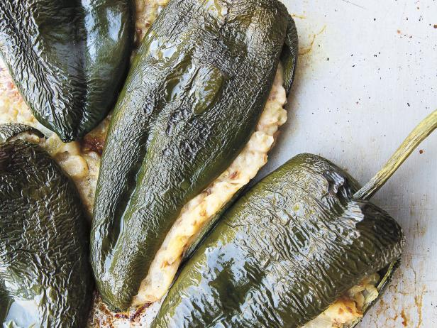

White Bean Stuffed Poblanos

Quick and delicious
This recipe is amazingly simple for how much flavor it packs. The finishing squeeze of lime really makes it sing.
Ingredients
- 1/4 cup and 1 TBSP olive oil, divided
- 2 tsp cumin seeds
- 2 small yellow onions
- 2 TBSP ground corriander
- 1 (15 oz) can great northern beans
- 1 serrano pepper
- 2 cloves garlic
- 1/2 tsp salt
- 2 limes
- 4 poblano peppers
Steps
- Preheat oven to 350 degrees F.
- Prep ingredients. Finely dice the onion. Finely chop the serrano. Mince the garlic. Juice one lime, slice the other into wedges for serving. Slit the poblanos lengthwise,
removing the seeds but keeping the pepper whole. Drain and rince the beans, place in a medium size mixing bowl.
- Heat 1/4 c of the oil in a large skillet over medium-high heat. When oil shimmers, add cumin seeds. Stir and cook for a maximum of
one minute until a medium shade of brown. Add onions and corriander and continue to cook until onions are translucent. Remove from heat.
- While the onions cool, mash the beans in their bowl with a potato masher or fork until they look like chunky mashed potatoes. To the bowl, add
salt, serrano, garlic, lime juice and the cooked onions. Mix well, taste, add more salt if needed.
- Arrange the poblanos on a cooking sheet. Using a spoon, stuff each pepper with the onion-bean mix. Brush each pepper with the remaining 1 TBSP oil.
- Bake the tray of peppers for 45 minutes. Serve with the remaining lime wedges.